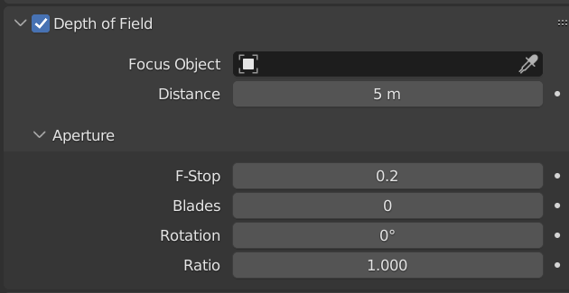
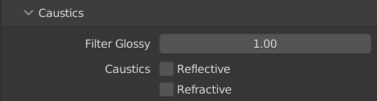
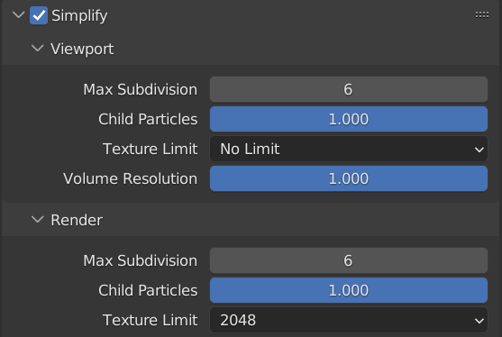

- Edit>Préferences>System, suivant la configuration de l'ordinateur, il est possible d'accélérer les rendus sur Cycles. Dans mon cas: Optix affiche mes composants donc je les coche pour obtenir ce petit boost de puissance.

Si la caméra n'existe pas, en ajouter une.
S'il n'y a pas de caméra, il faut en ajouter une Add>Camera

Verrouiller la caméra à la vue et choisir son angle de vue pour le rendu.
Pour déplacer la caméra, il faut déjà entrer dedans. Pour ça, il faut cliquer sur l'icone de caméra sur la droite de l'écran.

Raccourci en vue 3D: 0 sur le pavé numérique
Raccourci en vue 3D: "." sur le pavé numérique
Pour que la caméra suive les mouvements de l'utilisateur, il faut la verouiller en allant dans le "menu N" (Touche N du clavier), dans la catégorie View et cocher Camera to View.

Selectionner la Caméra et ajouter du DOF
Après avoir cliquer sur la caméra, un menu apparait en bas à droit de l'écran avec un icone de caméra. En l'ouvrant, on a affaire à plusieurs réglages.

On s'intéresse ici à la catégorie Depth of Field qu'il faut activer. En l'ouvrant, on a accès à la distance de focus, et à l'Aperture.
En ouvrant l'Aperture, on a accès aux memes réglages que sur un appareil photo. Pour augmenter le flou on baisse le F-Stop à 0.2. Il ne reste plus qu'à jouer avec la distance de focus pour que le modèle ne soit pas flou.

Moteur de Rendu: Cycles
Pour ce projet, on choisira le moteur de rendu Cycles qu'on active dans l'onglet de réglage de rendu dans l'onglet inférieur droit: il a un icone d'appareil photo.

Réglages de rendu:
Noise Threshold: 0.01
Denoise: OID - Albedo/Normal
Max Samples: 1024
Light Path Bouces: Total 3
Caustics: OFF
Simplify textures: 2048px
Le reste n'a pas à etre modifié.
Dans Sampling>Render le Noise Threshold doit etre activé et mis à 0.01. Il faut aussi cocher la case de Denoise si ça n'est pas déjà pré-coché. Enfin, Max Samples doit etre descendu à 1024.

Dans Light Paths>Max Bounces en Total, il faut mettre 3; ça permet à chaque particule de lumière de ne faire que 3 rebonds avant de disparaitre.

Dans Caustics, il faut tout décocher: Reflective et Refractive. 
Il faut activer l'onglet Simplify et dans Render>Texture Limit mettre 2048: on limite la taille des textures.
Réglages d'exportation:
Résolution: 1440 x 1920
Output: PNG - RGB - 16
Dans les réglages d'exportation sous les réglages de rendu, il suffit de copier les réglages qui sont sur cette image:

Lors d'un rendu d'animation: Attention, à bien choisir le chemin de sortie pour ne pas avoir de mauvaise surprise!
Il ne reste plus qu'à lancer le rendu.
*Pour lancer le rendu il faut aller dans Render>Render Image en haut de l'écran.
*

Enregistrer l'image
Pour enregistrer l'image, il faut aller dans Image>Save As.... Chose qui se fait automatiquement en animation.